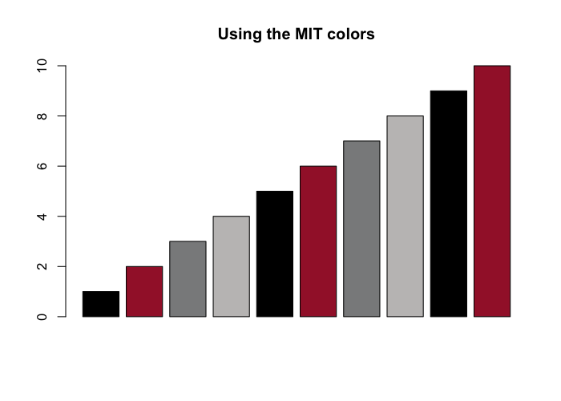
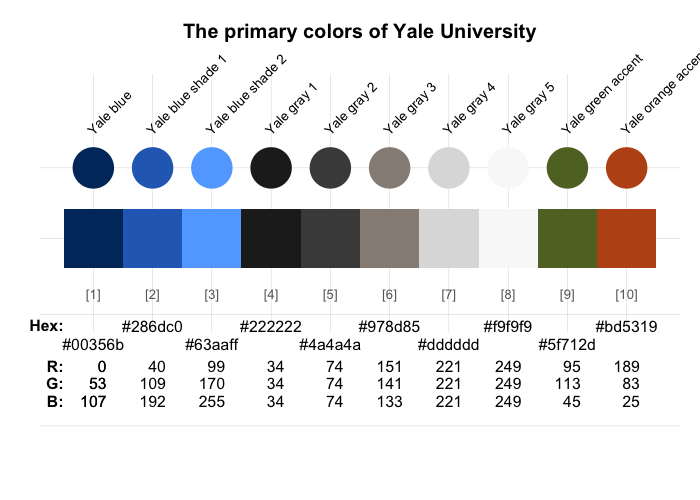
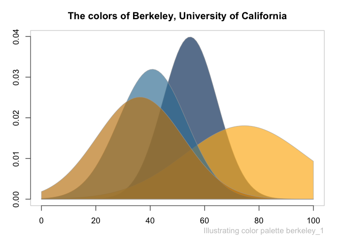
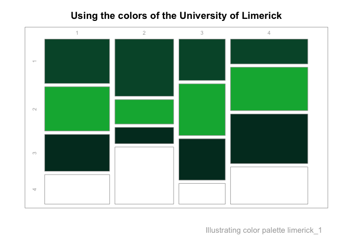

The colors of your university
Most universities use specific color combinations to express their unique brand identity. The unicol package provides the colors and color palettes of various universities for easy plotting and printing in R. We collect and provide a diverse range of color palettes for creating scientific visualizations.
Our primary goal is to make it simple to create beautiful visualizations that are in accordance with institutional regulations and style guides. Assuming that you have some R code for creating an image, the unicol allows you to directly use the color palette of your institution.
Installation
The latest release of unicol is available from CRAN at https://CRAN.R-project.org/package=unicol:
install.packages('unicol') # install from CRAN client
library('unicol') # load the packageThe current development version can be installed from its GitHub repository at https://github.com/hneth/unicol/:
# install.packages('devtools') # install pkg
devtools::install_github('hneth/unicol')The unicol package is based on the R package unikn and loads key functionality from it.
Usage
The unicol package provides colors and color palettes, whereas the unikn package provides color-related functions:
Contents
The unicol package currently provides 205 color palettes from 88 institutions.
(See the vignette on Color palettes for an overview of all color palettes and institutions.)
Examples of color palettes
Figure 1 illustrates 50 random color palettes (with 265 colors):
Figure 1: A sample of 50 unicol palettes (containing 265 colors).
Using color palettes
As the unicol palettes are provided as vectors of R colors, they can simply be used as the col argument of R graphics functions. For instance, we can use the MIT colors (of the Massachusetts Institute of Technology) in a bar plot (with the barplot() function of the base R graphics package) as follows:
barplot(height = 1:10,
col = mit,
main = "Using the MIT colors")
To modify a color palette (e.g., by resizing the palette or adding transparency), we use the usecol() function of the unikn package:

Here are some some additional examples how the color palettes from unicol can be used:
# Viewing a color palette:
unikn::seecol(yale_1, main = "The primary colors of Yale University")
# Demo plots:
unikn::demopal(berkeley_1, type = 2, main = "The colors of Berkeley, University of California", seed = 3)
unikn::demopal(limerick_1, type = 3, main = "Using the colors of the University of Limerick", seed = 3)
Your color palettes
The current range of color palettes included in unicol is highly selective and incomplete. However, we are happy to include color palettes and institutions from all over the world.
If you are missing a color palette, you can easily create and add it. For instructions on how this can be done, please see the documentation of the newpal() function (of the unikn package). The vignette on Institutional colors provides a corresponding example.
Call for contributions: Collecting color palettes
- Are you using the unikn functions to create your own color palettes?
If you do, please let us know (e.g., on this GitHub issue) so that we can include it in future versions of the unicol package. To enable us to verify and provide credit to your contributions, please send us the following information:

- your code (e.g., the
newpal()command creating your color palette),
- your reference or source information (e.g., the names of the institution and some URL with color definitions),
- your name and some valid contact information (e.g., an Email address).
We’re looking forward to your inputs and contributions (at this GitHub issue)!
Resources
The following versions of unicol and corresponding resources are available:
| Type: | Version: | URL: |
|---|---|---|
| A. unicol (R package): | Release version | https://CRAN.R-project.org/package=unicol |
| Development version | https://github.com/hneth/unicol/ | |
| B. Online documentation: | Release version | https://hneth.github.io/unicol/ |
| Development version | https://hneth.github.io/unicol/dev/ |
References

The unicol package originated as a collaborative project by the following course:
-
Open Source Software Development in R (ADILT applications, PSY-18040), at the University of Konstanz
- Spring/Summer 2023: Tuesdays, 13:30—15:00; in C426
- Taught by Hansjörg Neth (h.neth@uni.kn, SPDS, University of Konstanz)
License

unicol (created by Hansjörg Neth et al.) is licensed under a Creative Commons Attribution-ShareAlike 4.0 International License. (Based on a work at https://github.com/hneth/unicol).
The unicol package is based on the R package unikn and loads key functionality from it.
Citation

To support our efforts, please cite the unicol package in your derivations or publications.
- Neth, H. et al. (2023). unicol: The colors of your university.
Social Psychology and Decision Sciences, University of Konstanz, Germany.
Computer software (R package version 0.1.0, August 16, 2023).
Retrieved from https://CRAN.R-project.org/package=unicol.
doi 10.5281/zenodo.8252106
A BibTeX entry for LaTeX users is:
@Manual{,
title = {unicol: The colors of your university},
author = {Hansjoerg Neth and Constantin Basler and Paula Bauer and Kaethe Bodenstein and Franziska Drechsel and Gina-Loretta Franz and Karolin Heiss and Julia Koenig and Isabelle Krist and Larissa Schwab and Alina Sohst and Isabel Staatz and Lisa Trueb},
year = {2023},
organization = {Social Psychology and Decision Sciences, University of Konstanz},
address = {Konstanz, Germany},
note = {R package (version 0.1.0, August 16, 2023)},
url = {https://CRAN.R-project.org/package=unicol},
doi = {10.5281/zenodo.8252106},
}The copyrights to all unicol designs remain with their original creators.
[File README.Rmd updated on 2023-08-18.]